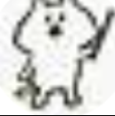

(*￣▽￣)ﾌﾌﾌｯ♪！どうも超上機嫌なじゃくです！え？なんで上機嫌かって？
その理由は...?
お知らせサイトとIframeサイトを作ったから！
ちょ！じゃく君！
やったー！
じゃくーーーーーーー
なんや。こんな時に。
あれ？ココツの顔が..?
なんていいサイトを作ったんだ！！！
Iframeサイトを作れたなら、学校のPCで悪いことがたくさんできるじゃないか！！！
へへへへ。早速試してみるぜ！
ちゃんと動くかな？
大丈夫！多分、動くから。
よし動いた！！！！
うp主がここに画像を貼るのめんどくさくて、画像貼りませんでした。ごめんなさい._.
おい。何しとんねん。うp主は。
せめて画像ぐらいは貼ろうよ....
URLはこちらから！
はいはいー。次のアップデートはー...?
お知らせサイトを作りました！！(っち。うp主め)
うおおおおおおおおおお
やったぜ
てか、じゃく。(興奮しすぎて、ついに呼び捨て)
どうした？
...?
もしかしてこれから更新情報とかも全部お知らせのほうに移すの...?
はい。それは僕の仕事なので。
うp主が作ったの!?
うん
あーー。もう僕が作ったってことになったのにー....
じゃく君...
例
ちょっと悲しいよ...前まで僕にこのサイトを作ったのは僕だ！っていってたのに...
ちょっと悲しいよ...前まで僕にこのサイトを作ったのは僕だ！っていってたのに...
ああ....
....
...(どうしよう。もう逃げれない。)